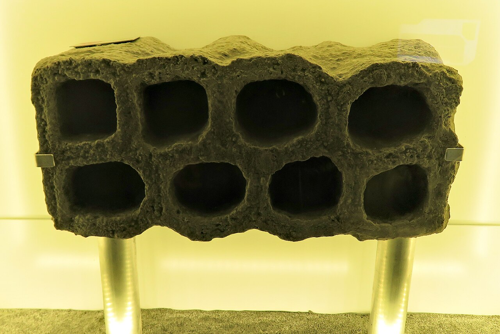
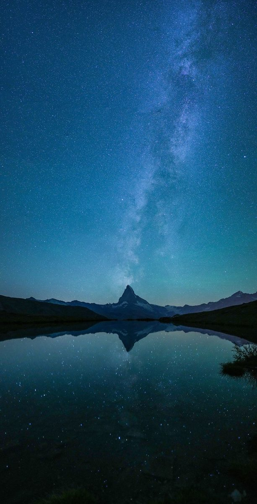
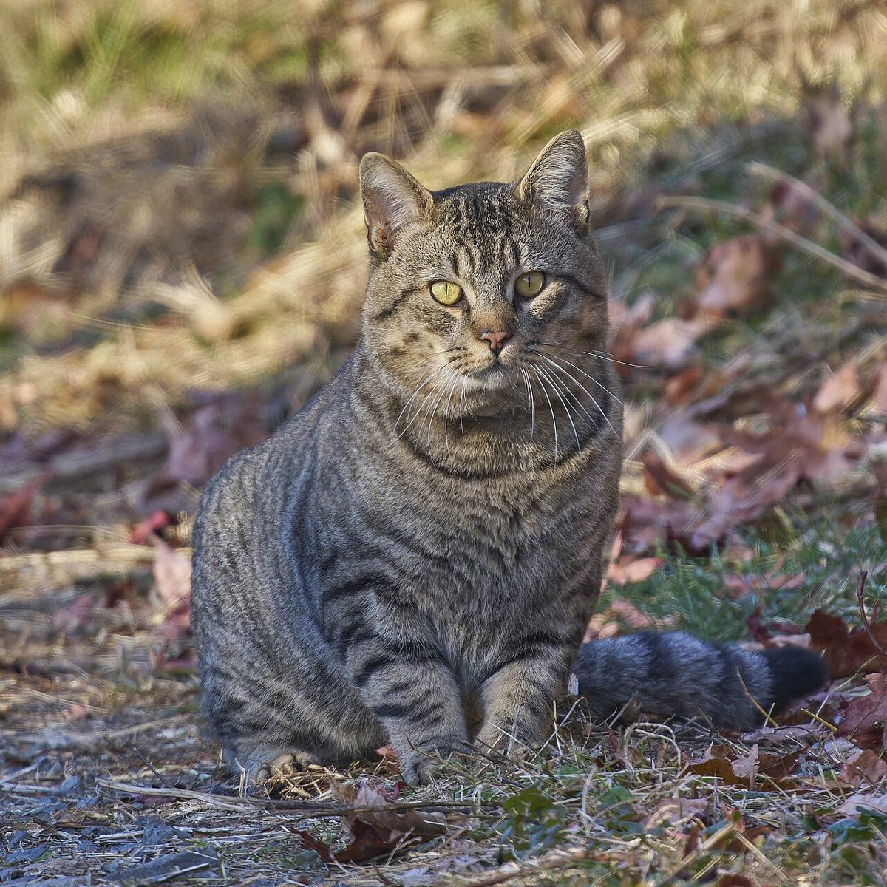
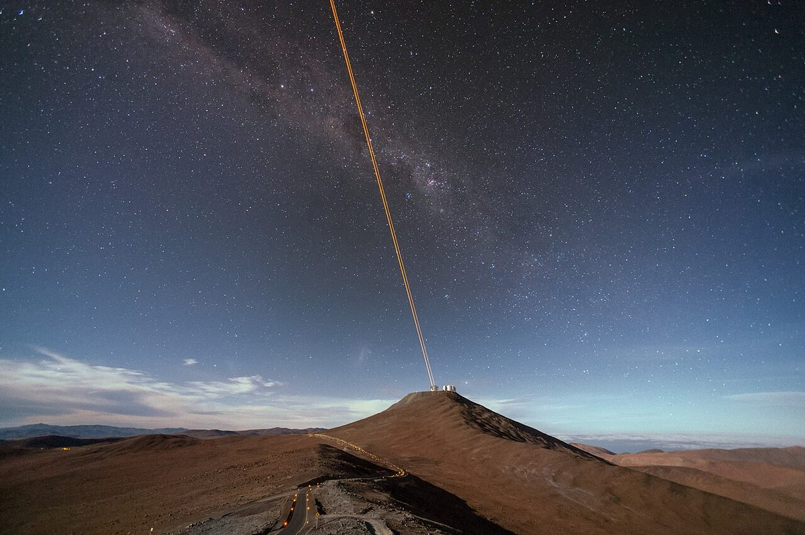
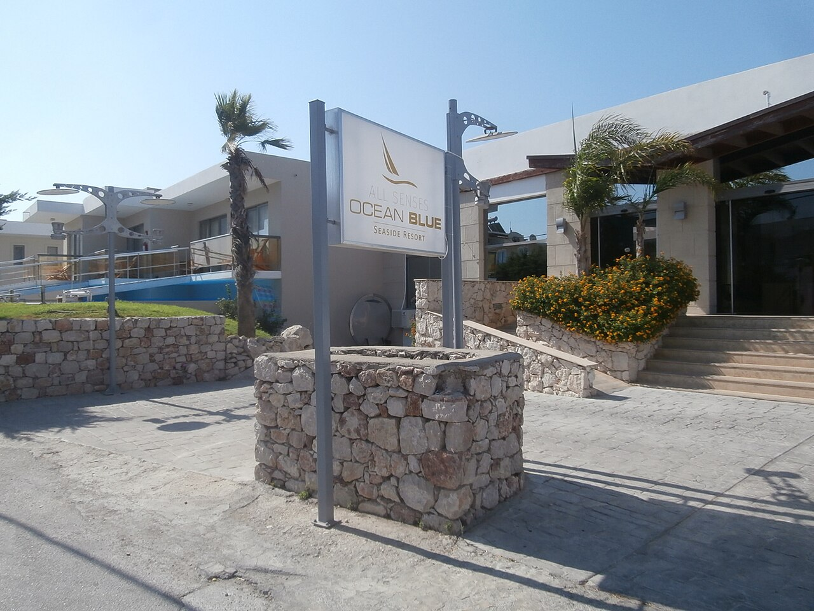

Science · 20 October 2026 · 3 min read
How does a compass know which way is north?
Tiny explorers have trusted compasses for over a thousand years. But how does a little floating needle always find north?
Posts about reading, learning, friendship and the small science of everyday things — written to be read alone or together.
New posts land here the moment they are published.
Tiny explorers have trusted compasses for over a thousand years. But how does a little floating needle always find north?

A compound from magic mushrooms makes the fierce mangrove rivulus fish less aggressive, without dulling its curiosity — a clue about how brains wire mood and calm.

That sudden "ah-choo" is your body's best defense against stuff getting into your nose. Here is what is really happening.

It keeps its baby gills its whole life, can regrow a lost limb, and barely seems to age. Meet the axolotl — nature's perpetual kid.

A jumbo jet can weigh more than a hundred cars, yet it cruises at ten kilometers high. The answer is a four-way tug-of-war between four forces.

Honey starts as plain flower nectar and ends as golden, sealed-up sweetness. Between the two there is a whole factory line of bees, stomachs, and wing-fanning. Here is the journey from flower to hive.

A young bird with no map, no phone and no grown-up to ask still flies thousands of kilometres to the right place. Sun, stars, Earth's magnetic field and smell all take a turn.

Plant a seed upside down and it still grows the right way. So how does it know which end is which?

Melted rock, a trapped gas trick, and mountains that build themselves. The pressure cookers of planet Earth, explained.

Thousands of tiny color sacs, muscles wired straight to the brain, and skin that can sense light by itself. The full trick, explained simply.

The Moon is not shrinking or growing — it is a ball hanging in sunlight, and you are only ever seeing a slice of it. Here is the real reason for the phases.

Half a millimeter long, eight legs, and it has survived boiling, freezing, deep-ocean pressure and outer space. Meet the toughest animal on Earth.
No paint, no magic — just sunlight, a lot of falling raindrops, and light bending and bouncing inside each one. Here is how a rainbow is really made.

It is the faint white band across a dark night sky, and it is also our entire galaxy — home to at least 100 billion stars, including the Sun. How we know what it looks like from inside it.

A purr is a tiny engine in the throat that runs on both the in-breath and the out-breath — and it might be doing a lot more than saying "I'm happy."
A cloud can hold as much water as a hundred elephants, yet it drifts overhead instead of falling on your head. The secret is droplet size, rising air, and a trick of heat.
Every autumn the same trees that were green all summer turn gold and red. It looks like magic, but it is a quiet chemical process that starts with shorter days. Here is how it works, step by numbered step.

Stars do not really wobble — our air makes them look like they do. Here is what is happening between you and a star.

Wild stories, flying elephants, and a brain that is almost as busy as when you're awake. Scientists are still unpacking the mystery.

One bite of ice cream, one sudden ache behind your forehead. Brain freeze is not your brain freezing at all — it is a nerve and a blood vessel getting confused.
The big mouth-stretch everyone shares — and the reason one person's yawn can set off a whole room. Scientists are still working out the first part, but the second is stranger.

Not because it reflects the sky. Water itself is a filter, and it quietly throws away the red half of sunlight. The blue is what's left over.

If you leave a glass of sea water in the sun, it does not dry up the way a puddle does. That is a clue to where the salt comes from.
Sunlight is white — so why is the daytime sky blue and the sunset red? A simple answer kids can repeat at dinner.
Three honest rules for choosing your next read — and why it is completely fine to stop a book you do not enjoy.
Germs are too small to see, but you can still wash them away. Here is what soap actually does — and why twenty seconds matters.